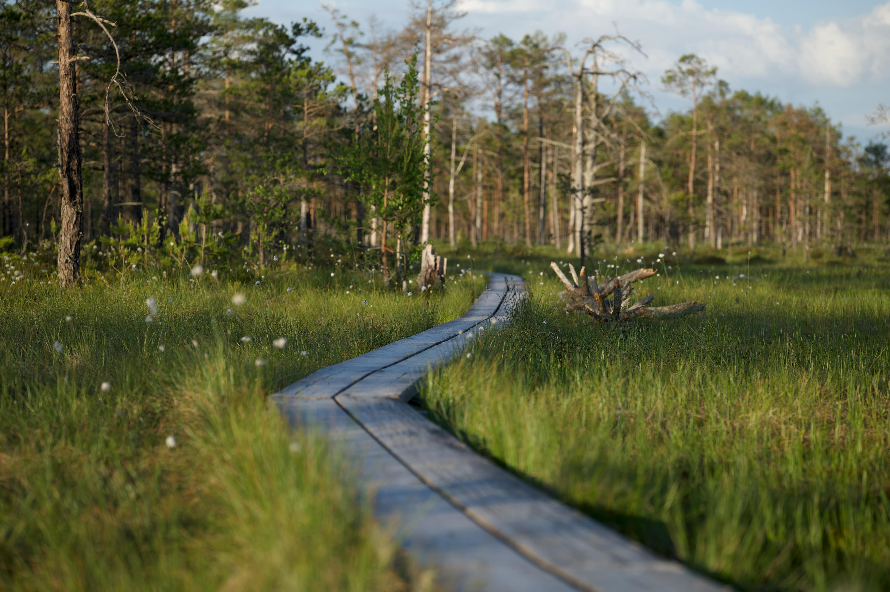

367 ha
Förstörd mark
En undersökning om hur vägar, järnvägar och byggen påverkar våra mest värdefulla ekosystem.
Utforska datan →Förstörd mark
Koldioxid
Ökning
Föreställ dig en våtmark som en levande organism som andas in koldioxid, filtrerar vatten och ger näring åt hundratals arter. Men när vi drar en väg rakt igenom den är det som att skära av ett blodomlopp.
Våtmarker är bland naturens mest effektiva verktyg mot klimatförändringar. De lagrar mer koldioxid per kvadratmeter än de flesta skogar. Men infrastrukturutvecklingen med vägar, järnvägar och bebyggelse tar mer och mer av denna värdefulla mark.
Resultatet? Ökade utsläpp, sämre vattenreglering och förlorade livsmiljöer.
